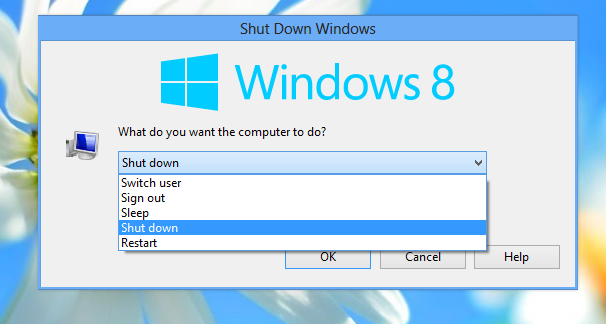

I don't understand. Putting the commands inside a submenu is itself the protection so an action like Shutdown or Restart doesn't get triggered accidentally. Even if you open the main menu using hover, how is one likely to accidentally open the shutdown submenu at that same instance and then also accidentally click Restart or Shutdown? You should exercise caution if you are opening the submenu itself. Introducing one more confirmation will result in users complaining of too many clicks.
As for the case if you use "Restart" or "Shutdown" as the default Shutdown command in the main Start Menu, you can change it to use the Shutdown dialog as the default Shutdown command, so it will show you a confirmation dialog:

This is your confirmation dialog which is already present. You can press R to switch to Restart or S to switch to Shutdown. You can add this dialog by going to Customize Start Menu tab. Locate Shutdown in the left column and double click it to bring up the Edit Menu Item dialog. Change the command to "shutdown_box".
Or you could also install the freeware app, ShutdownGuard to prevent accidental restart or shutdown:
http://winaero.com/blog/avoid-accidental-and-automatic-shut-down-or-restart-with-shutdownguard/ It adds an additional confirmation to block automated/programmatic shutdowns/restarts.